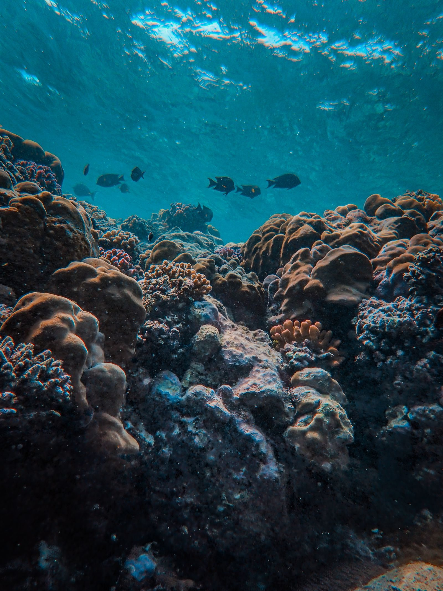
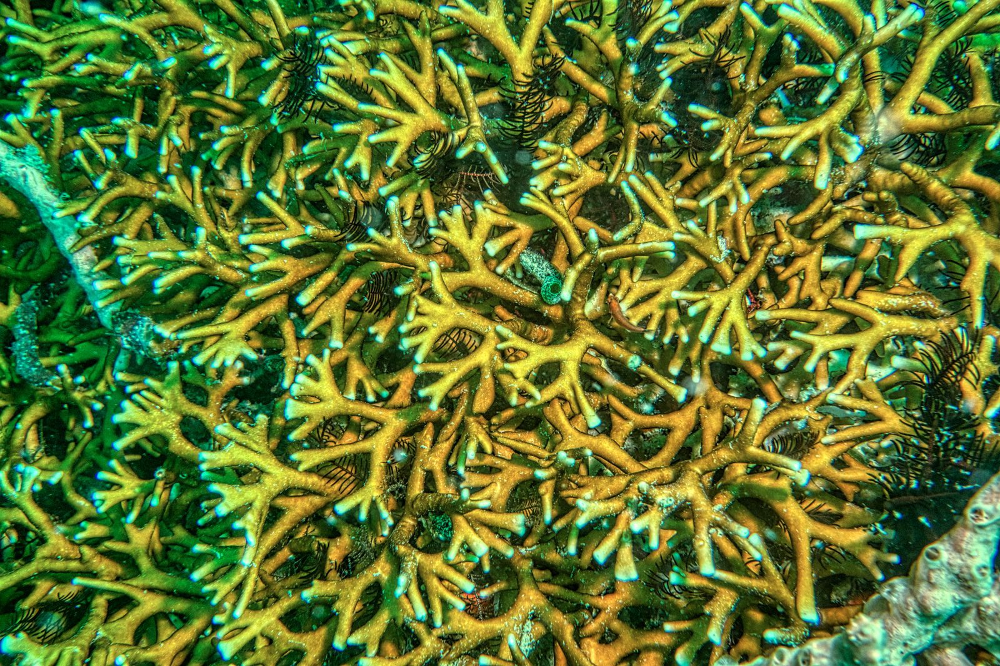

L.3 — Method & Permits
The work is slow. The log is how you know it happened.
I'm Sofia Reyes. I spent six seasons as a restoration diver with a Florida Keys restoration programme — planting other people's corals, and watching which plantings were still alive when the survey boats came back. The honest answer was: fewer than the press releases said. I founded Reef Nursery in 2019 to run the same work with the counting done in public: small cohorts, every genotype tracked, survival printed next to the losses.
The practice is deliberately small — two nursery sites, one raceway shed, a maximum of three programmes at a time. Restoration fails at scale when the monitoring stops; the log is the product as much as the coral is.

§ 01 — Method
Four operations, in order
Everything the practice does is one of these four. The techniques are the field's standard ones — the difference is that each step writes to the same log the client can read.
Fragmentation & the coral trees
Branching corals — staghorn, elkhorn — are raised from fragments: short branch tips cut from licensed broodstock, hung on underwater "trees" of PVC and fibreglass where water flow is good and predators are few. A fragment that would take years to establish on the reef floor reaches planting size in nine to fourteen months on a tree, cleaned monthly by divers. Every fragment is tagged to its genotype — its parent colony — because a reef planted from one genotype is a garden, not a population.
Micro-fragmentation for massive corals
Boulder and brain corals grow millimetres a year and cannot be raised on trees. Instead, a colony is cut into one-centimetre fragments in the land-based raceways; the fragments race to cover their plugs, and fragments of the same genotype planted side by side fuse back into a single colony years faster than a wild recruit grows. This is how a species that measures growth in centuries gets a place in a three-year programme.
Outplanting
Grown colonies go to the reef in the cool months, fixed with marine epoxy or cement to cleaned substrate, in plots laid out on a genotype map: many genotypes, spaced so that when the colonies mature and spawn, the larvae are cross-fertilised. A reserve of every genotype stays in the nursery — never outplanted — as broodstock and as storm insurance. Planting is logged colony by colony, with the plot photographed the day it goes in.
Photo-monitoring
Every plot has fixed photo points. Survey divers re-shoot the same frames on schedule — six, twelve, twenty-four months — and the mosaics are compared frame by frame: alive, dead, diseased, missing. The counts go into the log the client reads, unedited, including the surveys we'd rather not publish. Monitoring is also the early-warning system: paling, disease bands and storm damage show in the photographs before they show in the totals.
§ 02 — The rules the work runs under
Permits, ethics, safety, terms
Permits & ethics
- Florida work runs under Florida Keys National Marine Sanctuary authorisation and a state special-activity licence; Belize work under Belize fisheries permits held jointly with the resort partner. No planting happens on an expired permit — the log records permit numbers per programme.
- No wild harvest for stock. Broodstock comes from licensed fragments of opportunity — coral broken by storms, anchors and groundings that would otherwise die on the sand — and from colonies already in nursery culture. Healthy wild colonies are never cut to fill a table.
- Genetic rules. A minimum of eight genotypes per species per site; no site planted from a single parent; genotype maps kept with the log so future spawning can actually mix genes.
- Disease protocol. Any colony showing tissue-loss disease is quarantined on land or removed — never outplanted, never moved between sites. Gear is disinfected between sites, every dive.
Dive safety
- All work diving follows scientific-diving standards: dive plans filed, buddy pairs always, no solo diving, no exceptions for "one quick check".
- Nursery work is shallow (4–10 m) by design; outplanting below 18 m is planned on shortened bottom times and priced that way.
- Weather limits are the dive supervisor's call and are final: no restoration deadline outranks a small-craft advisory.
Engagement terms
- Season. Outplanting runs November to June. Programmes signed by September are fragmented the following February; the 2027 intake is open now and assessed in enquiry order.
- Money. 30% on signing, the balance against outplanting and survey milestones — the final payment follows the 12-month survey, so the practice is paid last for the number that matters.
- Reporting. Survey results are delivered within 30 days of each survey dive and added to the client's log view unedited, good or bad.
- Storm clause. Every programme carries the reserve-stock clause from Case 02: losses from a named storm are replanted from reserve at cost, once, within two planting windows.
- Fit. We decline sites where the cause of loss is still active — an outfall, a dredge, chronic anchor damage with no mooring plan. Planting into an ongoing insult is billing, not restoration.
